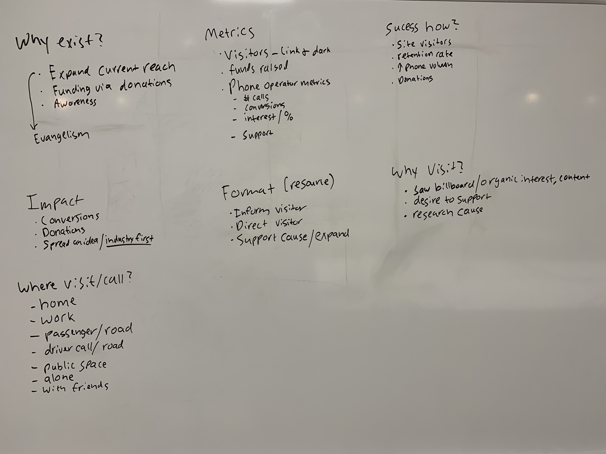
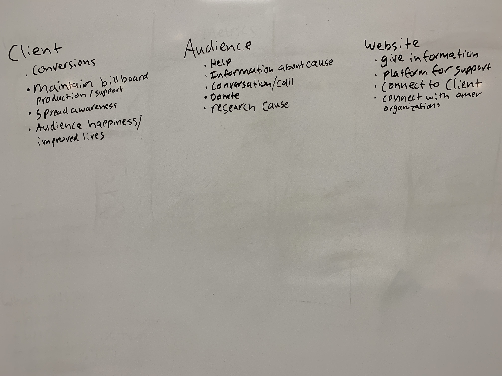
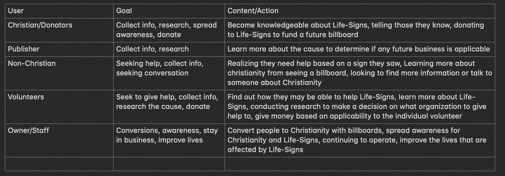

AUDIENCE AND GOALS
What are we aiming towards and who is this for?
Because of how broad Life-Signs' audience is it can be difficult to target highly detailed segments. However, five main audiences can be divided with specific under each audience. In order of highest importance, Non-Christians, Christians, Volunteers, Publishers, and Owners and Staff. Under these segments, more specific goups follow. Examples being Non-Christians who are adults, or Christians who are curious about the Life-Signs organization. The publisher and owner/staff audience are not as wide as the other three, yet are still important enough to include.
| Volunteers | Christians | Non-Christians | Publishers | Owner/Staff |
|---|---|---|---|---|
| Students | Volunteers | Children | Lamar | Ed |
| Kids | Promoters | Adults | Outfront | Potential |
| Adults | Church | Need It | Clear Channel | Developers |
| Donors | Internet | Refuse It | Grace | Phone Operators |
| Developers | Kids | In Need | Fairway | - |
| Phone Operators | Adults | Not in Need | Interested | - |
| Christians | In Need | Antagonists | Not Interested | - |
| - | Not in Need | Skeptics | - | - |
| - | Curious | Unsure | - | - |
| - | Drivers | Atheists | - | - |
| - | Passengers | Agnostic | - | - |
| - | - | Agnostic | - | - |
| - | - | Curious | - | - |
| - | - | Drivers | - | - |
| - | - | Passengers | - | - |

When it comes to website goals, the site exists to expand the current reach of the present evangelical campaign, act as a platform for monetary donations, and increase awareness of Life-Signs. The website would be sucessful if it gained site visitors, had a high retention rate, increased the phone call volume, and generated donations. Metrics are measurement that tell developers basic infomation. They can be used to calculate site-sucess. The metrics this site will use are visitors via links or organic searches, ammount of funds raised, and phone call metrics. The phone call metrics would be number of calls, number of percieved conversions, interest in percent of callers, and support in percent of callers. It's impact to the Life-Signs cause would be the number of people converted to Christianity, amount in donations generated, and spread the idea of a website for a Christian billboard campaign. The site format follows one of research: inform the visitor, support/expand the cause, and direct the visitor. Reasons for the audience to visit include seeing billboards/organic interest and content, a desire to support Life-Signs, and research Life-Signs. Possible areas the audience would visit would be home, work, in public spaces, alone, and with friends. The passenger may visit the website whle the on the road, and the driver may call while on the road.
  